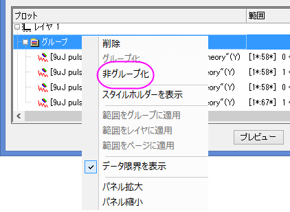
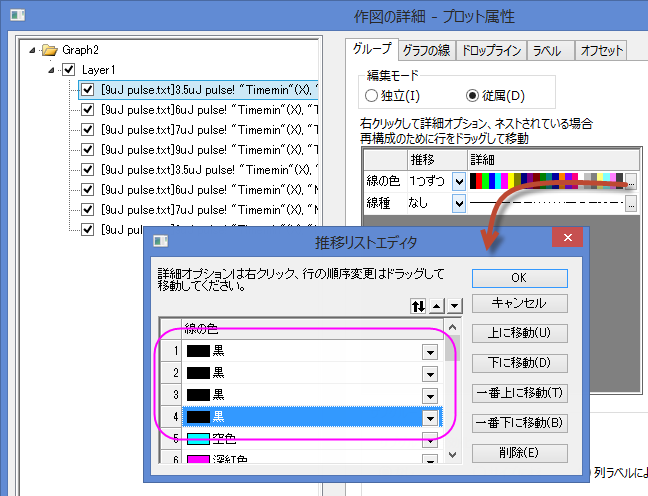
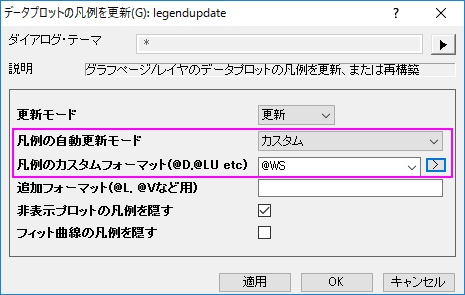

減衰および復調曲線の散布図
Customize-Grouped-Scatter
サマリー
以下の散布図は、色素ドープポリマーの可逆性光崩壊の2つの光子の蛍光測定を行った3つの減衰および復調曲線を表しています。グラフについての詳細は、事例をご覧ください。
必要なOriginのバージョン:Origin 2016 SR0
学習する項目
- レイヤ内のプロットを再配置する作図のセットアップダイアログを使う方法
- グラフ内でシンボルをカスタマイズする方法
ステップ
- こちらからzipファイルをダウンロードし、テキストファイルを抽出します。
- Originを開き、標準ツールバーの複数ASCIIインポートボタン
 をクリックし、ASCIIダイアログを開き、テキストファイルをインポートします。
をクリックし、ASCIIダイアログを開き、テキストファイルをインポートします。
- impASCダイアログで、インポートモードをシートを新たに作って読み込むに設定します。OKをクリックして、インポートを完了します。
- 8個のプロットを組み合わせるのに作図のセットアップダイアログを使います。ワークブックをアクティブにし、データセットが選択されていないことを確認します。2Dグラフギャラリーツールバーのボタンをクリックし、作図のセットアップダイアログを開きます。
すべてのパネルが表示されていない場合、  および ボタンをクリックして、作図のセットアップダイアログの3つのパネルのすべてを表示します。
および ボタンをクリックして、作図のセットアップダイアログの3つのパネルのすべてを表示します。
はじめに、作図の詳細ダイアログを使って4個の折れ線グラフを一つのグラフにまとめます。上側パネルで全てのデータセットを選択し、中央パネルで列TimeminをX、 列TheoryをYに設定します。そして、それらを下側パネルに追加します。
それから、4つの散布図を同じグラフに追加します。同じように上側パネルで全てのデータセットを選択し、グラフタイプを散布図に、中央のパネルで列TimeminをX、列NormDataをYに設定します。そして、それらを下側パネルに追加します。
 | 作図のセットアップダイアログで3つのパネルを全ての表示するために ボタンをクリックしてグラフタイプパネルを開き、再度をクリックして利用可能なデータパネルを開きます。 ボタンをクリックしてグラフタイプパネルを開き、再度をクリックして利用可能なデータパネルを開きます。
詳細な情報は作図のセットアップで作図を参照してください。
|
下側パネルで、レイヤ1の下にグループブランチがある場合、それを右クリックして、ショートカットメニューから非グループ化を選択し、これらのプロットのグループ化を解除します。

OKをクリックして下図のようなグラフを作成します。

- グラフウィンドウの左上角にあるレイヤアイコンをダブルクリックして、レイヤ内容ダイアログを開きます。TheoryグラフとNormDataグラフをそれぞれグループ1とグループ2としてグループ化します。4つのTheoryとNormDataをそれぞれShiftキーとマウスを使いながら選択し、グループ化ボタンをクリックします。

- そして、作図の詳細ダイアログを使って、8個のグラフを編集します。メニューから、フォーマット：作図の詳細（プロット属性）を選択し、作図の詳細ダイアログボックスを開きます。左側パネルでは、全部で8つのプロットがある事が分かります。最初の4つは折れ線グラフ、後の4つは散布図です。
- まず、4個の折れ線グラフを編集します。グラフをダブルクリックして作図の詳細ダイアログを開きます。左側パネルで4つの折れ線グラフは4つの散布図よりも上にあります。最初の折れ線グラフを編集するにはLayer 1 のすぐ下にあるプロットを選択し、グラフの線タブを開きます。接続線のドロップダウンでB-スプラインを選択し、太さを3にします。適用ボタンをクリックします。グループ化タブで、線の色の行にある増分セルに「なし」を設定します。w.OK をクリックして、これらの設定を適用します。

- 次に、4個の散布図を編集します。作図の詳細ダイアログで左側の5番目のプロット、つまり散布図の最初のプロットを選択します。シンボルタブを開き、サイズを8に、境界の太さを0に変更します。
グラフグループタブの中央付近のリストボックスで、シンボルを編集します。シンボル内部行の推移フィールドで1つずつを選択します。参照ボタン をクリックして推移リストエディタダイアログを開き、そこで最初の4行に三角形、円、六角形、正方形を順に選択します。
をクリックして推移リストエディタダイアログを開き、そこで最初の4行に三角形、円、六角形、正方形を順に選択します。
シンボルの縁色行の推移フィールドで1つずつを選択します。詳細の列で、カラーリストをクリックしてドロップダウンメニューからQ11: Candyを選択します。
シンボル内部行の推移フィールドで1つずつを選択します。参照ボタンをクリックして推移リストエディタダイアログを開き、そこで最初の4行に実線、実線、左半分、実線を順に選択します。
OKボタンをクリックして作図の詳細ダイアログを閉じると、次のようなグラフになります。
- 次に、グラフの軸を編集します。X軸をダブルクリックして、軸ダイアログを開きます。
まず、軸のスケールを編集しましょう。スケールタブの水平アイコンをクリックします。開始を-5、終了を690に設定し、主目盛のタイプを増分に設定して値を100に設定します。同じように、Y軸範囲(左パネルの垂直アイコンをクリック)も編集します。開始は0.61、終了は1.01、値は0.05に設定します。
軸目盛を編集するには、軸と軸目盛のタブを開いてから上のアイコンを選択し、軸と軸目盛を表示にチェックを付けます。そして主目盛と副目盛のドロップダウンリストから内側を入れます。右アイコンを選択して、右軸も同様に設定します。
- タイトルと凡例を編集します。下図のようにタイトルを編集します。凡例上で右クリックして、凡例：凡例を更新と選択して legendupdateダイアログを開きます。このダイアログで、同様に操作します。

OKをクリックして、このダイアログを閉じると、凡例が更新されます。この上でダブルクリックして直接編集モードに変更し、最初の4行を削除します。
最終的なグラフは次のようになります。